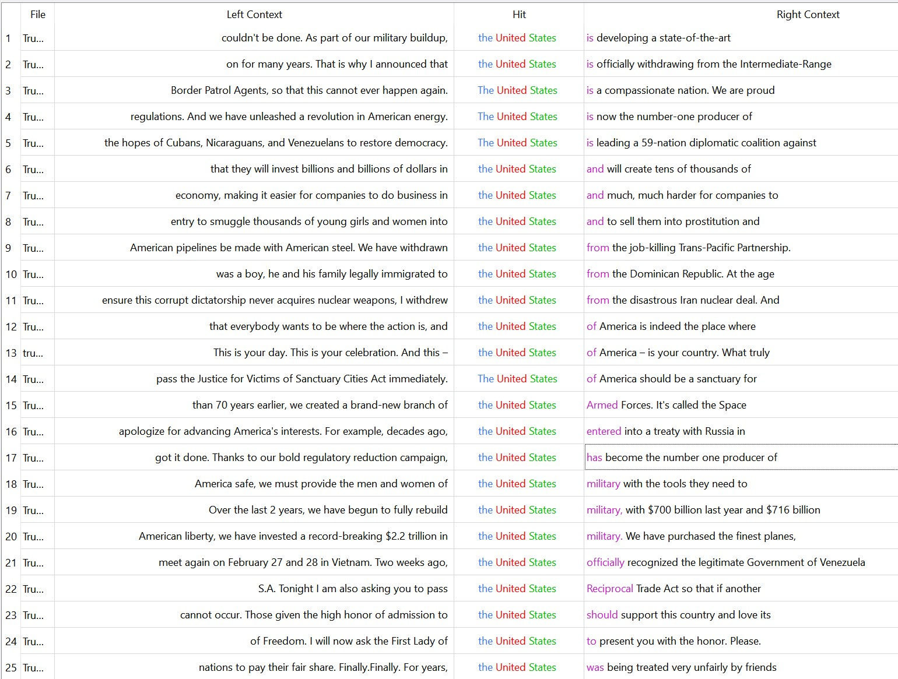

I will be comparing an contrasting the Inagural Adresses and State of The Union speeches between the first president, George Washington. Against the most recent and current president, Donald Trump. I thing that It will be interesring to see how the language and words each president use has changed over time.
Word Cloud
common words used by George Washingtoncommon words used by Donald Trump
George Wasnington tends to use words like united and states more than Trump as he was ths first president of the United States and was stating his plan for the young, new country. Donald Trump, seemed to use words like America, people and immigration a lot more than Washington as he is the most recent and current president and talking about current issues and is talking on a global scale.
N-Grams
common 3 token n-grams used by Washingtoncommon 3 token n-grams used by Trump
Both of these presidents refer to the United States at a higher frequency than any other 3 bit N-Gram. Trump refering to it less than Washington makes sense to me, as he was the first president and Trump was the 45th and 47th. Washington mentions phrases like fellow citizens, will be laid, laid before you and fellow citizens to set the ground of the new country.
how Washington uses the phrase "the united states"

how Trump uses the phrase "the united states"
Both of these presidents refer to the United States at a higher frequency than any other 3 bit N-Gram. Washington is using the term to describe how the government represents the people and is using phrases like brittanic majesty, indivisual states and catholic to represnt where and how the country was founded on. Trump mainly used words such as trade, mentions governement spending and refers to other governments shows that he is refering to th US on a global scale.